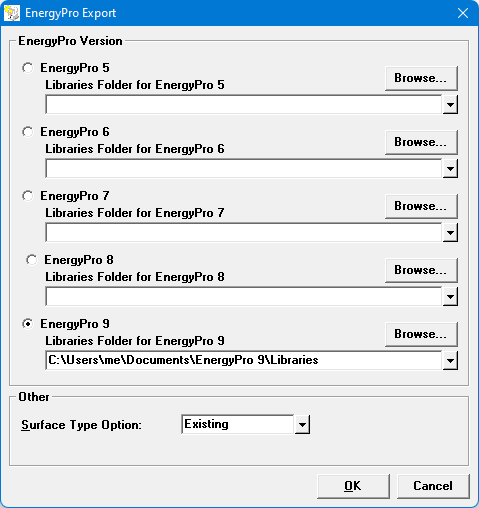
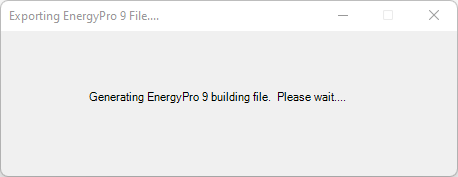
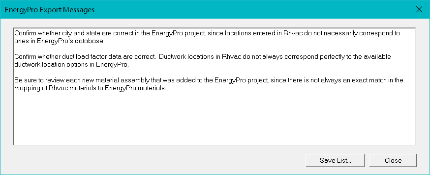

Export to EnergyPro (File | Export Menu) |
  
|
Export to EnergyPro (File | Export Menu) |
|
Icon: . Keyboard Shortcut: ALT, F, E, P, E
Opens the Export EnergyPro dialog, shown below.

EnergyPro Version: Determines the version of EnergyPro to which you want to export.
Libraries Folder: Specifies the folder that contains various libraries used by EnergyPro.
Surface Type Option: Determines the value for Surface Type to assign to all the materials exported to EnergyPro (also applies to the Type property of rooms in the EnergyPro project).
Clicking OK on the above dialog exports data from the current project into a new BLD file that can be opened in EnergyPro version 5, 6, 7, 8 or 9. The materials (floors, roofs, walls and doors) in the current project will be mapped to EnergyPro materials based on the mapping schemes defined on the EnergyPro Custom Mapping dialog.
Requirement: You must have EnergyPro version 5, 6, 7, 8 or 9 installed in order for this feature to work, and you must select a legitimate Libraries folder that contains the current user's EnergyPro library files.
After you click OK, the following window is displayed while the EnergyPro file is being generated:

Once the file has been generated, a standard Save As dialog is displayed, which lets you determine the folder location and filename of the new BLD file. After you save the BLD file, the following dialog shows you any messages that you may need to know about the exported file. Some standard messages will be listed (as shown in the below picture), as well as messages addressing any specific problems that were encountered while generating the file.

Click "Save List" to save the list of messages to a text file that you can review while working with the new project in EnergyPro.